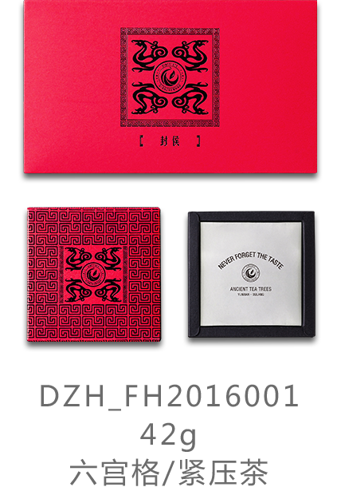
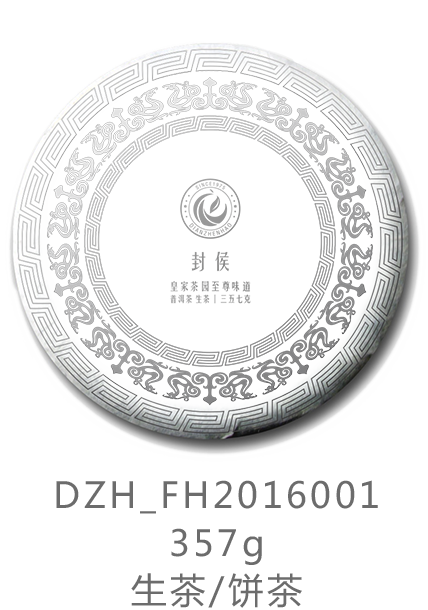
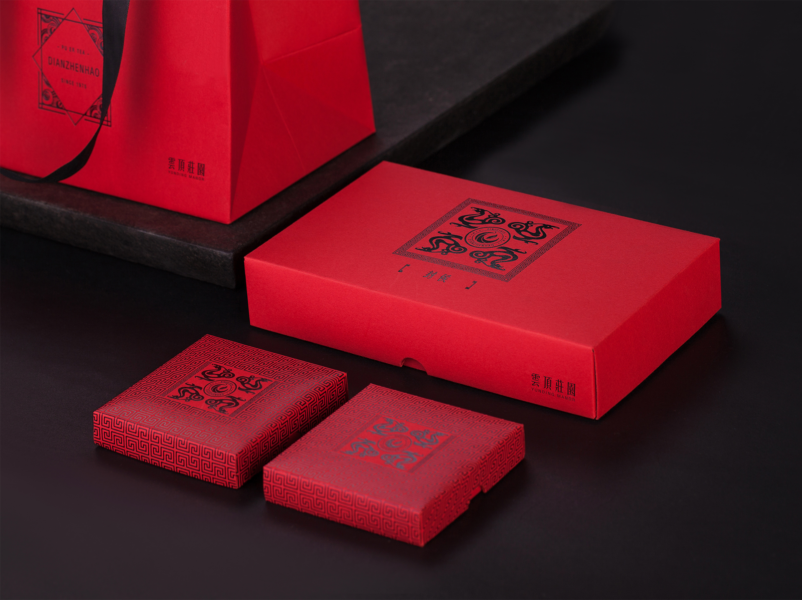

滇臻號·{封侯}典藏
瑞草嘉木，得日月山川之精华孕毓而生。尚品稀物，择天人质器之纯洁细作而成。
宁洱困鹿山，地灵物阜，实天地之造化。皇家古茶园，源远流长，藏世间之神奇。
逢盛世而开发，扬普洱之盛誉。
辟云顶庄园，立滇臻宝号。
封侯典藏，普洱极品，真香灵味，回甘生津。惟有人中圣，方识草中英。
FENGHOU-滇臻號·皇家茶园至尊味道
货号：
品名：
类型：
规格（饼茶）：
规格（六宫格）：
DZH_FH2016001
滇臻號·{封侯}系列
熟茶/生茶/饼茶/紧压茶
375g/饼、7饼/提、4提/件
42g/个、4个/盒、2盒/提
原料：
困鹿山千年万亩古茶园中原始古茶树
工艺：
古法与现代高科技精研结合，基因与传承中，匠心独到。用独特的 工艺，纯洁的器具，把难得的自然精妙芽叶，催生为称誉普洱茶界 的至味。
味型：
生茶 - 山野气韵，香气清扬，滋味醇厚，回甘生津明显。 熟茶 - 香气纯正自然、滋味柔和、口感温厚醇和。




- DIANZHENHAO -
主要理化成分及其疗效
茶多酚：消炎杀菌抗辐射，清除自由基，抗衰老
儿茶素：减轻辐射、抗自由基，降压降脂降糖、防止血管硬化
咖啡碱：中和胃酸，改善消化
维生素：增强免疫，软化血管，抗衰老
氨基酸：促进人的生长和智力发展，预防人体早衰和老年骨质疏松症
无机物：维护渗透压平衡，改善机体内部循环
脂肪酶：分解脂肪、健康减肥（饭后半小时）
黄酮类：防止血管硬化
水浸出物：滇臻號水浸出物同比提升20%，达42%-54%